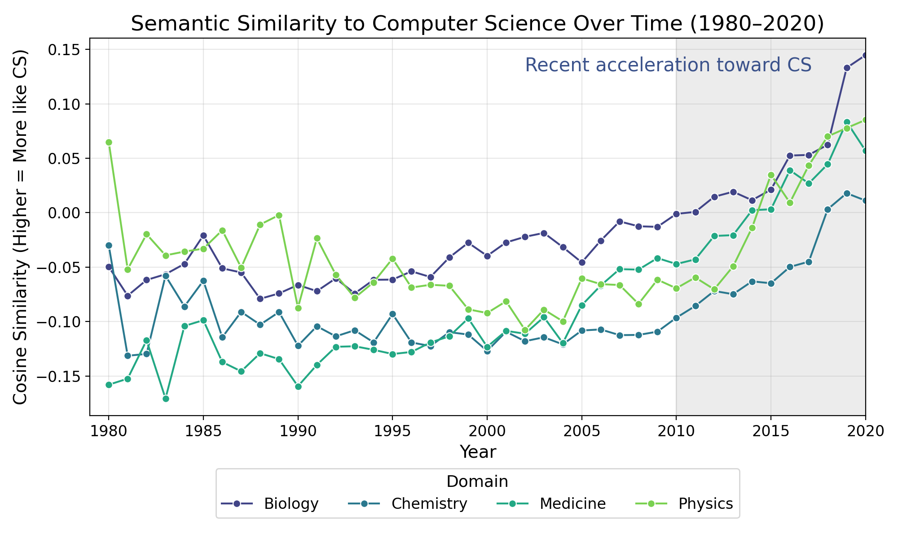
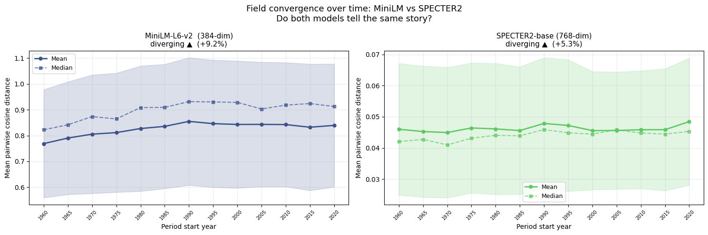
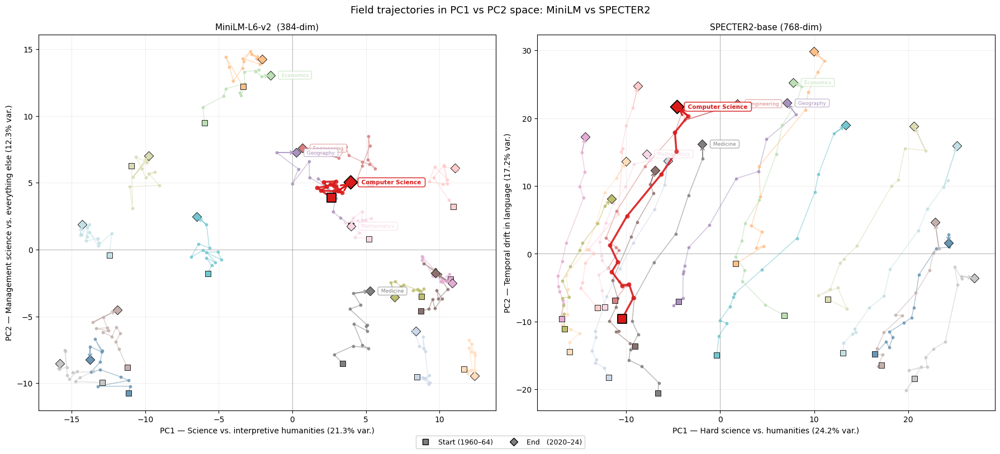

Predicting Paper Success & Tracing the Spread of Computational Thinking
Team project — Ruben Jacquemyn, Kacper Ruszkiewicz, Tim Bakkenes, Vladimir (Vova) Drozdov, and myself. This write-up covers the full team’s findings for context but is scoped to my own contribution (semantic drift analysis) — see “What I worked on” below.
The problem
Computer science’s terminology and methods appear to be showing up more and more in other scientific fields — but is that actually true, and if so, does it help explain why some papers get cited far more than others? We analysed 889K paper abstracts (Semantic Scholar Open Research Corpus) across three angles: what textual features predict citation counts, how far other disciplines’ language has actually drifted toward CS’s over time, and whether citation-prediction features learned purely from CS papers transfer to other fields.
What I worked on
My slice of the project was the semantic drift analysis: tracing how strongly each field’s language has moved toward computer science’s over six decades. I ran this on two independently-trained sentence embedding models (MiniLM-L6-v2 and SPECTER2) specifically to check whether any convergence pattern was real or just an artifact of one embedding model’s quirks.
Because PCA on embedding centroids gives you axes, not sentences, interpreting what each principal component actually meant took three separate checks: reading the five highest- and lowest-scoring documents on each axis, correlating PC scores against field labels and publication year to confirm the axes tracked genuine disciplinary and temporal structure (not noise), and training a Ridge regression to project each axis back onto the vocabulary that characterises it.
Teammates led the other two strands: replicating and extending a LASSO-based citation-prediction method (Baba, Baba & Ikeda, 2019) to identify which non-technical words in an abstract still predict citation count, and testing how well citation-prediction features learned only from CS papers transfer to predicting citations in other disciplines.
Key findings
- Two seemingly contradictory patterns both held, across both embedding models: other fields’ language is converging toward computer science’s (an effect that visibly accelerates after 2010), while scientific fields overall have grown more semantically distinct from each other over the past 60 years. CS isn’t dissolving disciplinary boundaries in general — it’s specifically pulling other fields toward it while they simultaneously drift apart elsewhere.
- The convergence is stylistic as much as topical. Each field’s core thematic identity stayed stable over time, but academic writing broadly shifted from administrative language toward empirical, quantitative vocabulary — fields are writing more like empirical CS without actually changing what they write about.
- (Team) Technical jargon barely matters for citation prediction. Replacing every technical noun in an abstract with a placeholder token barely changed — and at the strictest citation-percentile thresholds, actually improved — a classifier’s ability to separate high- from low-citation papers.
- (Team) Of 17 LLM-derived abstract features, two carried almost all the signal: a “hype score” and whether the abstract read as a survey. A paper’s own claims about itself — explicit novelty, use of a baseline — were close to irrelevant.
- (Team) CS-trained citation-prediction features transferred above baseline to every tested domain, though the mechanism isn’t yet fully disentangled from simple vocabulary overlap between adjacent fields.



Code
This was a 5-person team project — the linked repository covers all three analysis strands (citation prediction, semantic drift, transfer learning), not just the semantic drift piece described above.